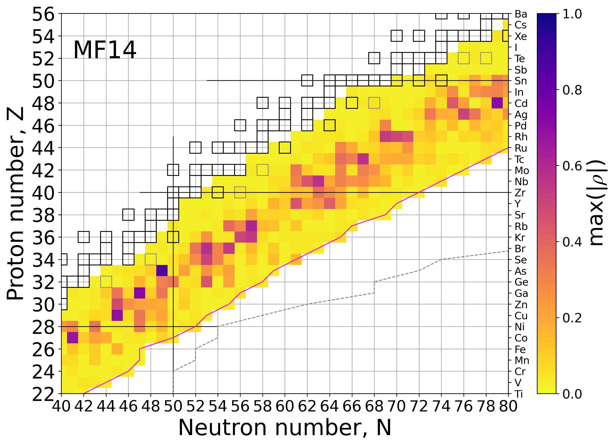

R process
Our paper on studing uncertainties due to neutron capture reaction rate unknowns in weak r-process abundances is now arXiv![arXiv:2602.12428 [astro-ph.HE] (2026)] We've studied the sources and amounts of uncertainties within neutron capture reaction rates and how they propagate in the weak r process.
Feel free to email me with questions or if needed I can also meet and discuss any aspects of the paper, the ideas behind correlated and uncorrelated Monte Carlo, or systematic v statistical uncertainties over a zoom call.
Here is a chart of nuclides showing the isotopes we find most impactful to at least one element in the nonmagnetized disk wind conditions.
This work was conducted in a collaboration between North Carolina State University, University of Notre Dame and Lawrence Livermore National Laboratory.
February 2026
Feel free to email me with questions or if needed I can also meet and discuss any aspects of the paper, the ideas behind correlated and uncorrelated Monte Carlo, or systematic v statistical uncertainties over a zoom call.
Here is a chart of nuclides showing the isotopes we find most impactful to at least one element in the nonmagnetized disk wind conditions.

This work was conducted in a collaboration between North Carolina State University, University of Notre Dame and Lawrence Livermore National Laboratory.
February 2026